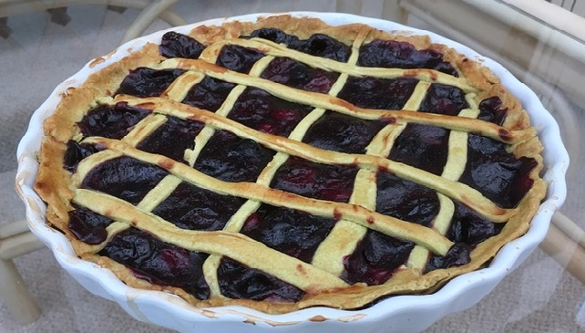

Cherry Pie
Ingredients:
-
2 Cups of All-Purpose Flour
-
A Dash of Salt
-
1/2 Cup of Vegetable Oil (nutral taste)
-
5 tbsp of Cold Icy Water
-
5 Cups of Frozen Cherries (seed taken out)
-
Around 1/2 Cup of Cane Sugar
-
4 tbsp of Corn Starch
-
1 tsp of Vanilla Extract

Method:
-
Measure the flour carefully and put it in a medium-sized bowl. Add the dash of salt and stir it with
a fork.
-
Pour the oil in and stir and "cut" it with a fork until you've got clumps varying between pea-sized
and lima bean-sized
-
Distribute the cold water over the mixture and stir and mash with the fork just until it all balls
together.
-
Wipe your countertop with a damp cloth and spread a piece of baking paper on it. The paper should
not slide -- if it does, dampen the counter a tiny bit more.
-
Form a little more than half of the dough into a disk and place it on the baking paper. Cover it
with another piece of baking paper.
-
Roll the dough with a rolling pin from the center out in all directions, keeping it as circular as
possible, then fit it to the bottom of the pie plate.
-
Roll out the rest of the dough and cut it into strips for the top.
-
Place the cherries in a saucepan and stir for a couple of minutes until they begin to express
liquid. Let the cherries cook another five minutes at which point they will have expressed a good
amount of liquid. Using a spider strainer or a slotted spoon, remove the cherries to a bowl, leaving
the juices behind. Bring the juice to a boil and let it reduce to about half, which should take
around 5-10 minutes.
-
Add the sugar to the cherry juice and stir until dissolved. Now add the cornstarch to the liquid, a
tablespoon at a time, whisking in each time until thoroughly dissolved. Once all the cornstarch has
been dissolved in the cherry juices, turn off the heat and pour the juice into the cherries. Mix in
the vanilla and set aside.
-
Spoon in the cherry filling onto the dough in the pie plate and spread it around equally.
-
Then, use the cut up strips of dough to make a lattice top of the pie as shown in the picture and
stick the lattice to the edge of the pie.
-
Glaze the top of the lattice top with milk (optional).
-
Bake in the preheated oven for 50 minutes.
-
Make sure to cool thoroughly for 3-4 hours before cutting and serving.